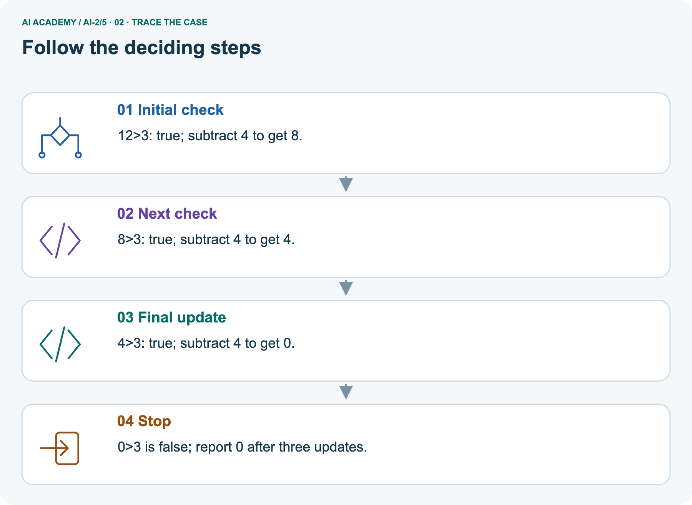
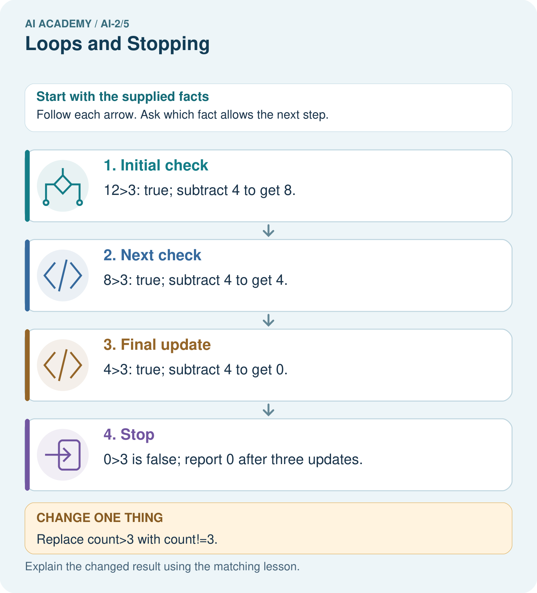
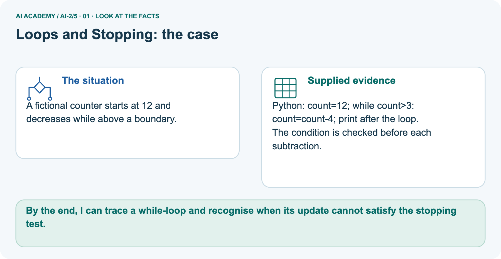
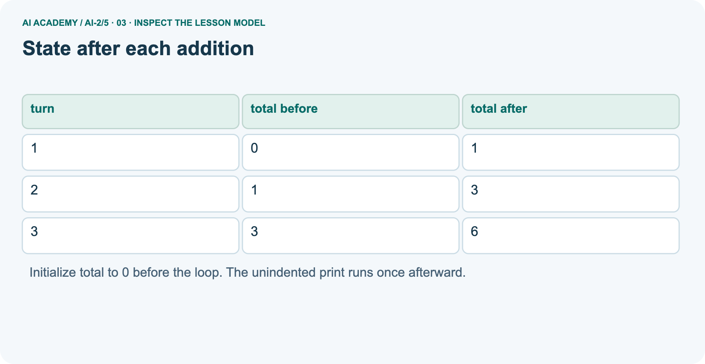
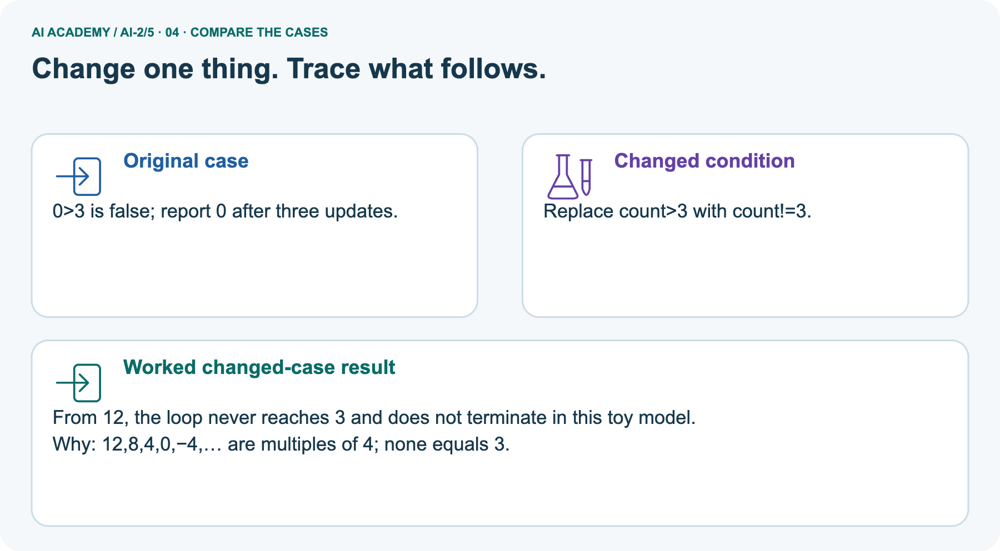
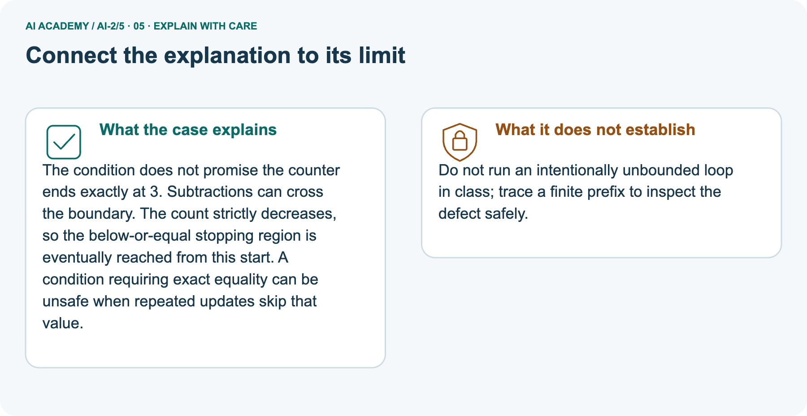
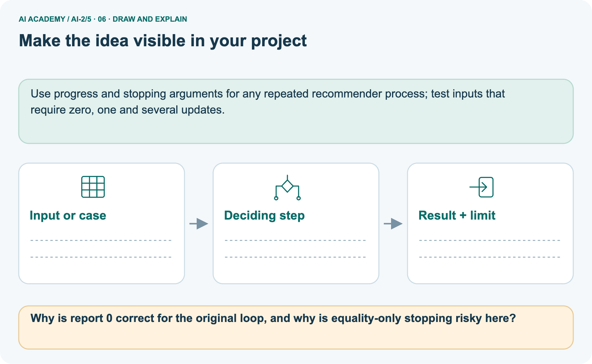

AI Academy · Level 2 · Grade 7 · Week 5 · Teacher guide
Loops and Stopping
Learn to understand, design, build, test and explain AI systems responsibly.
Project: Transparent Book Recommender
THE CONNECTED WEEK
Teach while-loop stopping as a reasoned state change.
Use a complete decreasing-count example and finite defect prefixes, then assess the separate increasing loop.
Keep one habit: Look for pre-update checks, boundary crossing and a justified stopping argument.
Main lesson · Section 1
Prepare this connected week
Use one main plan and keep practice separate from the independent first attempt.
Learning goal and precision
Primary target: Trace variable values before and after each loop iteration
Make while-loop stopping the main target. Use the supplied decreasing count with a pre-update condition, a visible progress argument and zero/one/several-update tests. Treat the earlier range/accumulator material as labelled review. Never execute an intentionally unbounded defect; inspect a finite paper prefix. Collect the selected increasing-loop case independently before feedback.
By the end, I can trace a while-loop and recognise when its update cannot satisfy the stopping test.
What to prepare
Use the supplied scenario, student illustrations and blank paper. For numeric work, offer counters or a calculator after learners show the setup. Fictional records are supplied; personal data and paid accounts are unnecessary.
Case exposure check: this source example appears in ai-2/4, ai-2/5, python-bridge/6. Reuse a familiar case for recall or modelling; verify that the case used to assess transfer has not already received feedback.
Python 3 editor and loops.py
Counters or numbered paper cards
Blank trace table with turn total before and total after columns
Main teaching plan
| Session | Sequence and minutes | Resources |
|---|---|---|
| Session 1 · Understand · 45 min | 0–7: recall and prerequisite; 7–15: inspect the concrete case and predict; 15–30: teacher models the worked trace; 30–40: learners explain a step using the text and visual; 40–45: check the core idea. | Use Your mission, Notice the evidence, See how it works, Compare the cases, Words that unlock the idea and Follow a worked example; record the brief recall in the workbook. |
| Session 2 · Practise · 45 min | 0–5: retrieve the procedure; 5–15: W2 completion practice; 15–23: explain and check with a partner; 23–30: each learner answers the misconception check; 30–40: targeted reteaching or a harder variation; 40–45: prepare the investigation. | Use Find and repair a mistake, Practise together, Run the investigation and Build your understanding; use the matching workbook W2 and misconception check. |
| Session 3 · Investigate and transfer · 45 min | 0–5: retrieve the decision rule; 5–20: investigate or trace; 20–30: start the independent case; 30–38: connect the project; 38–43: act on feedback; 43–45: plan the return check. | Use Run the investigation, Connect your project, Show what you know, Study a complete case and Try a new case independently. Allow extra time for the full task set. Use a coding lab only when this week actually provides one; Your lesson route is the planning section. |
This is a starting allocation of 135 minutes, not a validated duration. Preserve all named topics. Schedule extra time for connected examples, the full investigation, independent cases and project building.
Repeated copies of a case share one recorded attempt; they are not new evidence.
Opening retrieval and readiness
Without opening the old lesson, explain one key idea from Trace Tables. Give an example and a mistake that the idea helps you avoid.
Look for: Trace variable values before and after each loop iteration
Reference example, not the only acceptable wording: 2, 3 and 4; the stop value is excluded. The body runs three times.
Without opening the old lesson, explain one key idea from Decompose a Goal. Give an example and a mistake that the idea helps you avoid.
Look for: Distinguish a function definition from a function call
Reference example, not the only acceptable wording: Name show_remaining; parameters capacity and used. Arguments 15 and 6 match capacity = 15 and used = 6. Expected printed result 9.
It reads the old 2, adds 3 and stores 5. Assignment updates a value; it is not an algebraic equality.
Earlier wording, alternatives and picture transcripts
Teach the learning cycle
Retrieval answer guidance
Trace Tables
Decompose a Goal
Use the student module and workbook section with this exact week title. The worked case, independent question and answers below form one aligned lesson sequence.
What the learner must demonstrate
Trace count=0; while count<4: count=count+2. List values tested by the condition and final count. Would replacing <4 with !=5 terminate?
Concept to explain
Useful repetition needs a clear update and stopping rule.
| Term | Meaning |
|---|---|
| loop | A structure that repeats instructions according to a count or condition. |
| update | Change a stored value or state according to a specified operation or new evidence. |
| stopping rule | A specified condition that ends a repeated process. |
| infinite loop | A loop that never reaches its stopping condition under the assumed execution model. |
Prepare the class
This compact option is not the full-week schedule. Use the main teaching cycle and allow extra sessions for the investigation, independent work and project.
Allow 80 minutes: recall 8; explanation 12; worked demonstration 15; guided practice 20; independent assessment 15; project and reflection 10. Extend the lab into a second session when needed.
Preparation for the connected explanation
Readiness answer
End goal for the pictorial case
This added worked case illustrates the week’s main idea. Retain all original and connected topics; schedule its practice within the teaching cycle.
Main lesson · Section 2
Teach condition-controlled progress and stopping
Align the lesson with its while-loop target and keep for-loop review separate.
State the primary while task and scope
Primary while task: test count before each update. For starts 3,4,12 the final outputs are 3,0,0 after zero,one,three updates. The decreasing count eventually reaches ≤3. A !=3 condition from 12 misses three forever because every value is a multiple of four. Use finite paper prefixes for this variant. Earlier range/accumulator material is review, not the main lesson or this week’s assessment.
Read the complete script and all condition checks
count = 12
while count > 3:
count = count - 4
print(count)| Count before test | count > 3 | Next action |
|---|---|---|
| 12 | True | Update to 8 |
| 8 | True | Update to 4 |
| 4 | True | Update to 0 |
| 0 | False | Print 0 and stop |
Trace the pictorial version of the same task
A fictional counter starts at 12 and decreases while above a boundary.
Python: count=12; while count>3: count=count-4; print after the loop.
The condition is checked before each subtraction.



Read the picture one step at a time
The condition does not promise the counter ends exactly at 3. Subtractions can cross the boundary. The count strictly decreases, so the below-or-equal stopping region is eventually reached from this start.
A condition requiring exact equality can be unsafe when repeated updates skip that value.
Keep finite-prefix inspection for unbounded defects
Do not run an intentionally unbounded loop in class; trace a finite prefix to inspect the defect safely.
Predict the equality-only change
Change: Replace count>3 with count!=3.
Prediction: From 12, the loop never reaches 3 and does not terminate in this toy model.
Reason: 12,8,4,0,−4,… are multiples of 4; none equals 3.
Use the diagram to elicit stopping reasoning
Use the diagram and verbal explanation together. Ask learners to match a sentence to a specific visual step; do not assign learners fixed visual or auditory learning styles.
Cover the result. Ask learners to name the inputs and predict the next step. Uncover one step, connect the icon to the actual procedure, and explain its evidence. Then change the supplied condition and compare.
The picture is a representation; it does not document execution of a real AI model.
Earlier wording, alternatives and picture transcripts
Explain the mechanism
Input → Process → Output
Trace the information. At each stage, ask what changed and how you could test it.
Which stage could fail even when the other two are correct? Explain:
Predict first. Then check each step. A correct answer without visible reasoning is incomplete evidence.
2. Repeat while count < 4: show a card; count = count + 1.
3. The loop runs 4 times and stops when count becomes 4.
4. If count never changes, the stopping condition never becomes false.
Recalculate, retrace, or restate the reasoning in your own representation:
CHECK Did the evidence answer the exact question? Did the total, path, or source record stay consistent?
Concrete teaching case
Start n=0; while n<3, add 1 and record n.
List records and stopping condition.
Exact explanation to model
1,2,3. The next comparison is false. The update makes progress toward termination.
Explain the added worked example
Imagine adding numbered counters: first 1, then 2, then 3. A loop can repeat the same addition with a different number each time. This week you will predict each change before running a short Python script.
Tracing repeated calculations prepares you to inspect the data processing used in larger AI applications.
In for turn in range(1, 4), Python supplies 1, 2 and 3 in order. The start is included and the stop is excluded. The indented body runs once for each supplied value. The colon and four-space indentation mark that body.
This lesson uses integer range values with the default positive step of 1.
The output is 6. Before the first iteration, total is 0. Each assignment reads the previous total and adds the current turn. After turn 3, the range is exhausted, so execution continues after the loop.
The table records state; it does not create extra instructions.
Key terms
| Term | Meaning |
|---|---|
| Loop | A block of instructions that can run repeatedly |
| Iteration | One execution of a loop body |
| Accumulator | A variable that keeps a running result |
| Initialization | Giving a variable its starting value |
| Trace table | A record of variable values as instructions execute |
Model the reasoning aloud
Use the complete worked example below before asking learners to complete W2. Reveal a small part, invite a prediction, then explain the deciding step.
These teacher notes contain solutions; do not reveal the independent case answer during modelling.
| Range expression | Values supplied | Number of iterations |
|---|---|---|
| range(1, 4) | 1, 2, 3 | 3 |
| range(1, 2) | 1 | 1 |
| range(1, 1) | No values | 0 |
| range(4) | 0, 1, 2, 3 | 4 |
With one argument, range starts at zero. range(4) supplies four values but none is 4. If the worked script uses range(1, 1), the body never runs and the initialized total remains 0.
Do not rely on a variable first assigned inside a loop: a zero-iteration run might never assign it.
| Thinking move | Teacher prompt |
|---|---|
| Plan | What is given? What is the question? Which procedure fits these facts? |
| Do | Point to each input and intermediate step in the worked trace. Name the rule that allows the next step. |
| Check | Does the output answer the question? Which assumption or limitation prevents a larger claim? |
A pictorial worked case: Loops and Stopping
The facts we will use



Why this result follows
What this example does not establish
Change one thing in the pictured case
Ask while showing the picture
Main lesson · Section 3
Guide while traces, then remove help
Keep earlier for-loop instructions as review and assess the selected increasing-loop case separately.
Completion task and expected reasoning
Using the complete while script, predict fresh starts 3,4,12. Record tested values, truth results, updates and actual output separately. Explain the zero-update case.
Required outputs are 3,0,0 after zero,one,three updates respectively. Record actual runs separately from these expectations.
Start by identifying the given inputs together. Leave the intermediate steps blank. If needed, model one step, then withdraw that help on the next step. Move to a full trace only when the partial trace is understood.
For partners, alternate explainer and checker; collect a response from every learner before discussion.
Supported diagram check
Why is report 0 correct for the original loop, and why is equality-only stopping risky here?
The original stops as soon as count is not above 3. Exact equality fails because the update sequence skips 3.
Changed-case reasoning: From 12, the loop never reaches 3 and does not terminate in this toy model. 12,8,4,0,−4,… are multiples of 4; none equals 3.
Collect each learner’s explanation before discussion. Use the first missing connection between input, deciding step and result to choose support. This question is worked-case practice, not fresh mastery evidence.
Collect each learner’s explanation
Ask: Which facts are given, and which would we have to assume? Learners mark relevant details before discussing answers.
Say: Predict first. Show the rule, information path or calculation that would produce the result. A correct guess is not yet an explanation.
In pairs, one learner solves while the other checks evidence; exchange roles. Remove the worked answer before independent assessment.
Earlier wording, alternatives and picture transcripts
Demonstrate and guide practice
Board sequence
Write the given facts: Start n=0; while n<3, add 1 and record n.
Write the question to explain: List records and stopping condition.
Reveal after predictions: 1,2,3. The next comparison is false. The update makes progress toward termination.
Use the earlier changed question as optional later practice. Reserve Changed independent case for the first independent attempt before hints or feedback.
Classroom dialogue
Reveal reasoning one step at a time. Explain why a tempting alternative fails. Write units and denominators for arithmetic, trace conditions for decisions, and identify supporting sources for claims.
Model these guided questions
range(1, 3) supplies 1 and 2, giving total 3. Stop 4 includes 3. Exit: the reset bug agrees for one iteration because there are no earlier additions to lose. range(1, 4) should give 6; the faulty version gives 3.
Case-specific teaching sequence
| Stage | Teacher action |
|---|---|
| Session 1 start to 7 minutes | Retrieve assignment using the prerequisite. |
| 7 to 20 minutes | Model range with numbered cards and complete W1. |
| 20 to 33 minutes | Trace each row of the worked addition and predict output. |
| 33 to 45 minutes | Complete W2 and compare predicted and observed values. |
| Session 2 start to 8 minutes | Retrieve included start and excluded stop. |
| 8 to 20 minutes | Trace the reset bug, complete W3 and discuss the guided response. |
| 20 to 35 minutes | Collect independent W4 code and zero one and several iteration traces. |
| 35 to 45 minutes | Use W5 and the exit to examine assumptions and revealing tests. |
Reduce help deliberately
Individual reasoning check
Use the worked case for Loops and trace tables. Proposed explanation: “The stop value is included”. Decide whether this explanation is supported. Point to the step or supplied fact that decides; explain your repair if needed.
Expected correction: List the supplied values before tracing; range(1, 4) excludes 4.
Collect explanations, not only yes/no votes. If a misunderstanding is common, re-model the relevant step for the class.
If it affects a few learners, give a short targeted group explanation while others solve a more demanding variation.
Pictorial practice question
Reasoned teacher answer
Main lesson · Section 4
Run the supplied investigation
Keep expected results, observed paper traces and remaining limits distinguishable.
Supplied materials and answer guidance
Correct decreasing-count script: starts 3,4,12 produce final 3,0,0 with zero,one,three subtractions. The paper incrementing-card task tests 0,1,2,3,4 and displays cards at 0,1,2,3 before updates. Without an update, initially true conditions do not become false. For the !=3 variant, trace only a finite prefix; multiples of four cannot equal three. Keep actual runs and old versions. The selected independent case is the increasing count from 1 by 3 toward <8; reserve it for an uncoached attempt.
Run and record
Predict → Test → Record → Explain
Keep expected and actual results separate. Surprises are useful data when recorded honestly.
Walk a robot around a four-card loop. Record the update each time; remove the update to observe the failure; restore it and retest.
What did the hardest test teach you that the normal test did not?
Keep an inspectable record
| Record | What to capture |
|---|---|
| Input or evidence | Exact data, instruction or claim |
| Expected result | Answer or safe fallback declared before the run |
| Observed result | Actual result, including errors |
| Explanation | Rule, calculation or evidence explaining the outcome |
| Next test | One justified change and a new prediction |
Diagnose the first misunderstanding
The stop value is included: List the supplied values before tracing; range(1, 4) excludes 4.
Initialization belongs inside every iteration: Resetting the accumulator loses earlier work.
An unindented print repeats with the body: Indentation determines which statements repeat.
Zero iterations mean the entire program does nothing: Initialization and statements after the loop still execute.
Choose support from the response
| What the response shows | Next teaching action |
|---|---|
| Missing or misread facts | Read the case aloud, mark supplied versus unknown facts, and let the learner restate it. |
| Wrong procedure | Return to the deciding step in the worked case. Contrast it with the proposed incorrect explanation. |
| Arithmetic or implementation error | Trace intermediate values or lines; preserve the first mismatch and retry that step. |
| Correct result without a reason | Ask for a trace and a changed case before marking independent understanding. |
| An unsupported wider claim | Ask which supplied evidence supports the claim and which further observation would be needed. |
Offer an oral explanation, drawing, enlarged visual or fewer examples when that removes a reading/writing barrier. Keep the same reasoning goal.
Stretch secure learners by changing a boundary or assumption and asking them to defend the effect, not simply by assigning more of the same questions.
Earlier wording, alternatives and picture transcripts
Run the weekly evidence lab
Words You Can Use to Reason
A definition matters when you can recognize the idea, use it, and contrast it with a near-miss.
Make the lab runnable
Use the supplied investigation for shared practice. Keep predictions and observed paper-trace results separate. Reserve Changed independent case for the individual first attempt before feedback; do not use the reserved case as a paired lab task.
Diagnose and reteach
For guessing, return to given facts and request a trace. For vocabulary without application, use one example and one non-example. For arithmetic errors, check the setup before the calculation.
Finish with a different uncoached case before recording mastery.
Address these additional misconceptions
Match the support to the first error
Main lesson · Section 5
Assess the selected new case
Keep this key until after the first attempt; accept valid alternatives with defensible reasoning.
Selected independent question and key
Selected case: Start count at 1. While count < 8, add 3. Trace the condition and values. What happens if the condition becomes count != 8?
The condition is true at 1,4,7, then false at 10. Final count is 10. With !=8 the sequence never reaches 8: all values are 1 modulo 3, so this loop does not terminate.
Judge explanation, trace and limits
| Dimension | Evidence required |
|---|---|
| Explanation | Names the applicable idea or procedure and ties it to the supplied facts. |
| Trace and result | Preserves the given inputs and shows the relevant intermediate steps; distinguishes a prediction from an observed execution. |
| Limits | States the assumptions, missing evidence or conditions under which the result would change. |
Record each dimension as not yet, with support, or independent. Accept a valid alternative procedure with a defensible trace.
Do not penalise an honestly recorded model failure if the learner correctly explains its evidence and limits.
Give one usable repair action
Name the earliest unsupported step and give one action to repair it. Have the learner make that repair now and explain why. Then assess the relevant skill on a fresh, fully specified case.
Confirm it was not previously practised with feedback; solve and check the new case before assigning it. A follow-up design prompt is a starting brief, not automatically an equivalent test.
W1 Explain the range
For count=12, while count>3 subtract 4, list every value tested by the condition, including the final false test. How many updates occur, and what is printed?
Test 12,8,4,0; three updates; print 0. The false check at 0 prevents another subtraction.
W2 Trace before running
Using the complete while script, predict fresh starts 3,4,12. Record tested values, truth results, updates and actual output separately. Explain the zero-update case.
Required outputs are 3,0,0 after zero,one,three updates respectively. Record actual runs separately from these expectations.
W3 Repair the reset
Replace count>3 with count!=3, starting at 12 and subtracting 4. Trace only five updates on paper, explain why equality is missed and restore the appropriate condition.
The prefix is 12,8,4,0,-4,-8. Values remain multiples of four and never equal three. Restore >3; keep the faulty prefix and label the repaired run.
W5 Check a contract limitation
A loop with no update is tested only with count=3 and stops. Does that establish termination from count=12? Explain and choose starts giving zero, one and several updates in the correct script.
No. At 3 the initial condition is false, hiding the missing update. From 12 it stays true without progress. Correct starts 3,4,12 exercise zero,one,three updates.
Earlier wording, alternatives and picture transcripts
Assess and explain the answers
Worked case answer
1,2,3. The next comparison is false. The update makes progress toward termination.
Additional transfer practice question
Start at count 0. While count is less than 3, add 1 and display count. List the displays and the stopping value.
Reasoned practice answer
Displays are 1, 2 and 3. The next condition check finds 3 is not less than 3, so the loop stops.
What counts as evidence
| Criterion | 0 points | 1 point | 2 points |
|---|---|---|---|
| Result | Incorrect or absent | Partly correct | Correct with necessary conditions |
| Reasoning | No supporting trace | Some steps | Clear mechanism, calculation or source support |
| Limit | Overclaims certainty | Vague limitation | Relevant uncertainty or missing fact |
| Transfer | Copies without adapting | Adapts with prompts | Solves a changed case independently |
Use 6/8 as a classroom checkpoint, with 2 required for both Result and Reasoning. This is a proposed teaching rule, not a validated certification threshold.
Do not count a coached answer as independent mastery; correct unsafe or unsupported claims regardless of total.
Feedback
Ask the learner to find the evidence that challenges this claim: “A less-than-3 loop can never display 3.” Keep the first attempt and an uncoached retry separate.
Original transfer answer
The condition tests 0,2,4; the body runs twice and ends at 4. With !=5, even counts never equal 5, so it does not terminate under unbounded arithmetic.
A stopping rule should match the update and include resource bounds in an actual application.
Explanations for the additional workbook examples
W1 Explain the range
W2 Trace before running
W3 Repair the reset
W4 Build a repeated addition independently
A box starts with 5 counters. Each round adds 2 counters. Use rounds = 3, an initialized total and for turn in range(rounds). Print the final total once after the loop.
Trace the totals and predict fresh runs with rounds 0, 1 and 3. Assume rounds is a nonnegative integer.
Initialize total = 5 before the loop; add 2 inside it. For three rounds, turn values 0, 1, 2 give totals 7, 9, 11. Final outputs for 0, 1, 3 rounds are 5, 7, 11. Print is unindented.
W5 Check a contract limitation
Assess independent transfer
Selected case answer
Feedback that the learner uses
Main lesson · Section 6
Connect, adapt and return
Retain the project evidence and revisit the reasoning on a changed case.
Project evidence to keep
Loop through every candidate book, update its score, then stop at the end of the list.
Keep the decision, input, result, explanation and remaining limitation in the project evidence record. Retrieve this record next week rather than restarting the project.
Use progress and stopping arguments for any repeated recommender process; test inputs that require zero, one and several updates.
Support while preserving the reasoning goal
Trace one record or condition at a time with counters and labelled columns. Stretch: introduce a tie, boundary or missing field and declare its handling policy before rerunning.
Use counters and let the learner move a pointer through one instruction at a time. Offer a blank trace grid and permit oral explanation.
Extension: put print inside the correct loop and explain why zero rounds produces no output while an outside print still does.
The selected independent case tests 1,4,7,10 and stops at 10 under <8. Under !=8 it never reaches eight because all states are 1 modulo 3. Assess a fresh finite prefix and a stopping argument, recording support; do not use the old repeated-addition exercise as this selected assessment.
Plan the delayed check
Suggested return points in this level: ai-2/6, ai-2/8, ai-2/11. Use actual classroom dates, adjusting for holidays and gaps. One, three and six teaching weeks are scheduling choices, not a claimed optimal spacing.
At a delayed check, ask for the idea from memory and a changed application. Compare with the earlier independent response and record support used.
For a new level, revisit the previous capstone before checking the new prerequisites.
| Record | Teacher evidence |
|---|---|
| Learner code and date | |
| Concept and case used; prior exposure | |
| Explanation / trace / limits | |
| Support and first repair | |
| Changed case and delayed outcome | |
| Next teaching action |
Use the evidence to choose reteaching or the next step. A completed page, confidence rating or attractive project does not by itself demonstrate understanding.
Bridge to next week
Ask for one decision the learner can now justify and one situation requiring more evidence or human review. Confidence ratings are separate from correct independent performance.
Next: Week 6: Debugging Strategies. Retrieve today’s evidence and identify what carries forward and what is new.
Week 6 develops debugging and revealing function tests; Week 7 develops structured records and schemas.
Earlier wording, alternatives and picture transcripts
Connect and extend learning
Transparent Book Recommender
Support and stretch
Exit reflection
Bridge to the next week
Support and fresh reassessment
Plan the delayed return
Project evidence from this case
Reference bank and extra practice
Choose the reference that helps your next step.
Reference: alternative planning checklist
Reference · Section 7
Reference: alternative planning checklist
Use as a reminder alongside the main route rather than teaching the cycle twice.
Preparation and schedule
Teaching target: Trace variable values before and after each loop iteration
Prepare the labelled worked-case picture, the matching workbook, fictional input cards and a place for individual responses. No paid AI account is required for the paper reasoning activities.
| Session | Plan | Resources |
|---|---|---|
| Session 1 · Understand · 45 min | 0–7: recall and prerequisite; 7–15: inspect the concrete case and predict; 15–30: teacher models the worked trace; 30–40: learners explain a step using the text and visual; 40–45: check the core idea. | Use Your mission, Notice the evidence, See how it works, Compare the cases, Words that unlock the idea and Follow a worked example; record the brief recall in the workbook. |
| Session 2 · Practise · 45 min | 0–5: retrieve the procedure; 5–15: W2 completion practice; 15–23: explain and check with a partner; 23–30: each learner answers the misconception check; 30–40: targeted reteaching or a harder variation; 40–45: prepare the investigation. | Use Find and repair a mistake, Practise together, Run the investigation and Build your understanding; use the matching workbook W2 and misconception check. |
| Session 3 · Investigate and transfer · 45 min | 0–5: retrieve the decision rule; 5–20: investigate or trace; 20–30: start the independent case; 30–38: connect the project; 38–43: act on feedback; 43–45: plan the return check. | Use Run the investigation, Connect your project, Show what you know, Study a complete case and Try a new case independently. Allow extra time for the full task set. Use a coding lab only when this week actually provides one; Your lesson route is the planning section. |
Practice and assessment reminders
Before class, solve the supported practice: Copy the worked script. Change the range to range(2, 5). Record turn, total before and total after each iteration. Predict the single output, then run and compare.
Reasoned practice answer: Rows are 2 / 0 / 2, 3 / 2 / 5, 4 / 5 / 9. Final output 9. Keep the observed result distinct from the prediction.
Check every learner before discussion: Use the worked case for Loops and trace tables. Proposed explanation: “The stop value is included”. Decide whether this explanation is supported.
Point to the step or supplied fact that decides; explain your repair if needed.
Misconception repair: List the supplied values before tracing; range(1, 4) excludes 4.
Support: read the exact case aloud, enlarge the labelled picture, supply input cards and model only the first deciding step. Accept a spoken explanation or drawing; retain the reasoning goal.
Extension: Replace count>3 with count!=3. Require a prediction and a reason before comparing. Expected result: From 12, the loop never reaches 3 and does not terminate in this toy model.
Reason: 12,8,4,0,−4,… are multiples of 4; none equals 3.
Independent assessment: withhold the reserved answer until the learner has attempted the new case. Record support separately from correctness.
| Criterion | Not yet | With support | Independent |
|---|---|---|---|
| Explanation | Names an answer without a deciding fact | Uses a hint to link fact and decision | Explains the deciding fact in own words |
| Trace or test | Cannot connect input and result | Completes steps with prompts | Traces or tests a changed case accurately |
| Limits and revision | Claims more than evidence supports | Names a limit after a prompt | States a defensible limit and useful next test |
Project checkpoint: Frame the need. Name the user, the problem, allowed inputs and a safe simple starting method.
Use the weekly teacher answer for topic-specific reasoning. A saved progress tick is an activity record; judge mastery from the learner’s explanation and evidence.
Reference: feedback and records
Reference · Section 8
Reference: feedback and records
Use digital tools where they help retain an explanation and its evidence.
Keep practice and independent evidence separate
Use the two formative questions as supported practice, not as independent mastery scores. Discuss the deciding evidence rather than accepting a guessed selection.
The feedback comes from the reviewed public worked case. Do not reveal the separately reserved independent teacher answer until the learner has attempted that case.
Repair and portfolio records
Use the earlier worked-explanation links to address a specific missing building block, then return to the current question. Adapt this suggestion after observing the learner; it is not an automatic diagnosis.
Collect the completed-work portfolio as evidence. Record support separately from correctness, and assess explanation, trace/test and limitations. Progress ticks and quiz selections alone do not establish mastery.
Earlier wording, alternatives and picture transcripts
Ask students to predict before running code. Preserve errors and actual outputs; collect a changed test and an explanation. The branch-boundary and indexing lessons deliberately include failure cases.
Reference: teach with the six pictures
Reference · Section 9
Reference: teach with the six pictures
Choose the picture for the teaching move and connect it to the explanation.
01. Loops and Stopping: the case



A fictional counter starts at 12 and decreases while above a boundary. Supplied facts: Python: count=12; while count>3: count=count-4; print after the loop. The condition is checked before each subtraction.
Point to the given fact that matters most. Explain why it matters.
Teacher prompt: Point to the given fact that matters most. Explain why it matters. Ask learners to describe one label or arrow in ordinary words. Use the adjacent transcript if the image is difficult to see.
02. Follow the deciding steps
Initial check: 12>3: true; subtract 4 to get 8. → Next check: 8>3: true; subtract 4 to get 4. → Final update: 4>3: true; subtract 4 to get 0. → Stop: 0>3 is false; report 0 after three updates.
Point to each numbered stage and explain which recorded input it uses.
Teacher prompt: Point to each numbered stage and explain which recorded input it uses. Ask learners to describe one label or arrow in ordinary words. Use the adjacent transcript if the image is difficult to see.
03. State after each addition



State after each addition. 1 | 0 | 1. 2 | 1 | 3. 3 | 3 | 6
Read the labels and values. Explain the relationship the model shows.
Teacher prompt: Read the labels and values. Explain the relationship the model shows. Ask learners to describe one label or arrow in ordinary words. Use the adjacent transcript if the image is difficult to see.
04. Change one thing. Trace what follows.



Original case: 0>3 is false; report 0 after three updates. Changed condition: Replace count>3 with count!=3. Expected result: From 12, the loop never reaches 3 and does not terminate in this toy model.
Reason: 12,8,4,0,−4,… are multiples of 4; none equals 3.
Predict before checking the worked changed-case result. Name what changed and what the supplied facts allow you to conclude.
Teacher prompt: Predict before checking the worked changed-case result. Name what changed and what the supplied facts allow you to conclude. Ask learners to describe one label or arrow in ordinary words.
Use the adjacent transcript if the image is difficult to see. Changed-case reasoning: 12,8,4,0,−4,… are multiples of 4; none equals 3.
05. Connect the explanation to its limit



The condition does not promise the counter ends exactly at 3. Subtractions can cross the boundary. The count strictly decreases, so the below-or-equal stopping region is eventually reached from this start.
A condition requiring exact equality can be unsafe when repeated updates skip that value. Limit: Do not run an intentionally unbounded loop in class; trace a finite prefix to inspect the defect safely.
Explain the case, then point to a limit on the claim.
Teacher prompt: Explain the case, then point to a limit on the claim. Ask learners to describe one label or arrow in ordinary words. Use the adjacent transcript if the image is difficult to see.
Keep the stated scope: Do not run an intentionally unbounded loop in class; trace a finite prefix to inspect the defect safely.
06. Make the idea visible in your project



Use progress and stopping arguments for any repeated recommender process; test inputs that require zero, one and several updates. Draw your input, deciding step, result and limit.
Supported question: Why is report 0 correct for the original loop, and why is equality-only stopping risky here?
Draw your project trace and justify the deciding step using evidence.
Teacher prompt: Draw your project trace and justify the deciding step using evidence. Ask learners to describe one label or arrow in ordinary words. Use the adjacent transcript if the image is difficult to see.
Supported practice key: The original stops as soon as count is not above 3. Exact equality fails because the update sequence skips 3.
Earlier wording, alternatives and picture transcripts
Use one picture at a time. Hide a worked result before asking for a prediction, then reveal it for feedback. These are supported teaching cases; retain the separate independent assessment for a fresh first attempt.